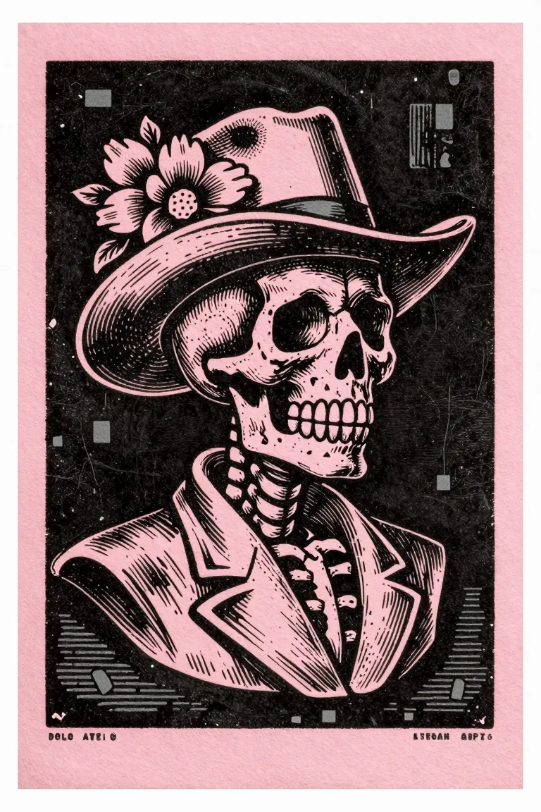

A cheap sheet that carries a hard black picture and set type. José Guadalupe Posada cut or etched the picture in a metal plate for the press of Antonio Vanegas Arroyo, and the sheet sold in the street.

Core thesis
A flat black picture cut in metal, with a hard white line and set type under it, can tell a news story or a joke to a reader who has little money and little time.
Design principles
Print the picture and the text from one forme: a metal relief plate locked next to the type.
Make the figure in solid black with hard white lines; keep the white line at 0.2–0.5 mm.
Make the mid-tone with cross-hatch at 30–60 lines an inch; do not use a screen.
Show a skeleton, a devil or a crowd in an action, with the face turned to the reader.
Put a headline in large type above the picture and a verse or a story in small type below it.
Print on thin paper in pink, green, yellow or white, and let the paper stand for a second colour.
Accept uneven ink, a broken type letter and a slight shift of the plate on the sheet.
Anti-patterns
Halftone dots or a photographic tone
Soft grey wash or a smooth gradient
A fine, even engraved line that has no hard black mass
Heavy coated paper with a gloss
A picture that is separate from the text on a clean white page